Caso 023 · Le Corbusier y Pierre Jeanneret · 1931 · vivienda unifamiliar
Un techo plano mide dos direcciones: deja pasar el sol bajo del invierno, que viene del sur, y detiene el de verano; su borde oeste subraya el horizonte del valle del Sena. Debajo, la familia vive abierta a las dos y una pared de piedra guarda al servicio y los coches.
Sintetiza el lugar (latitud 48°55' N: el sol llega a 17,6° el 21 de diciembre y a 64,6° el 21 de junio; valle lejano al oeste), el programa (familia abierta, servicio separado, garaje), la composición (un plano ligero sobre una hilera de pilares frente a una masa de piedra) y la construcción (acero y madera para lo que flota, piedra caliza local para lo que ancla).
Estereotómico: piedra caliza de 0,50 m en y = 6 (espina), y = 12 (norte) y x = 38,4 (este). Carga la cubierta, guarda el servicio, las instalaciones y el garaje y abre solo huecos pequeños: nace del terreno. Tectónico: nueve pilares de acero de 0,16 × 0,16 m en la línea sur (y = 0), tres en el borde del porche oeste, vidrio de suelo a techo y tabiques de bloque enlucido de 0,15 m. La cubierta (622 m², 42,6 × 14,6 m) apoya en pilares al sur y en la piedra al norte; la retícula es de 8 vanos de 4,8 m por 2 de 6,0 m. La casa está en contacto con el suelo: no hay escaleras ni ascensor, y el itinerario accesible es llano desde el aparcamiento hasta la galería y la puerta sur. El plano horizontal está a 3,60 m (cara baja) y desde fuera, con el ojo a 1,6 m, se lee como un plano delgado de 0,45 m.
| Espacio | Luz | Cómo se mide |
|---|---|---|
| Salón (57,6 m²) | horizontal sólida al sur (invierno) y difusa al oeste (valle) | El rayo de 17,6° baja del borde sur (vuelo 2,0 m, cara baja a 3,60 m) y llega al suelo a 11,4 m del borde; el sofá, a 3,9 m del vidrio, queda al sol de 11 a 13 h. En verano el rayo de 64,6° toca el suelo a 0,29 m al sur del vidrio: no entra. |
| Comedor (28,8 m²) | sólida a través del paso de 3 m sobre difusa del oeste | El haz atraviesa el muro de piedra por el paso (dintel 2,4 m) y llega al suelo y al muro norte, no a la mesa: se acepta como luz sólida sobre difusa, no de trabajo. |
| Alcobas 1-3 (15,8 m² cada una) | horizontal sólida de invierno, difusa en verano | El rayo de las 12 h pasa a 2,2 m sobre el pie de la cama: sol sobre la cama en invierno. Baños con ventana alta al sur. |
| Cocina, despensa, lavandería | difusa del norte | Luz constante en la encimera. |
| Servicio de noche y garaje | difusa por huecos pequeños al norte (0,6-1,2 m) | Se duerme, no se mira el sol. |
| Sala de servicio | sólida de invierno al sur | Mesa junto al vidrio sur. |
Poniente de verano. A 17,5 h solares (22,2°) el sol entra por el oeste hasta 0,6 m de altura, y a las 18 h hasta 1,3 m de altura (unos 4 m dentro del salón). Se defiende con un árbol de hoja caduca al oeste-noroeste (-7,5; 8,5), fuera de la banda de vista al valle, con la masa de la solera de piedra y con ventilación cruzada (huecos altos al norte, vidrio al oeste). En invierno el sol ya se ha puesto a esa hora. El riesgo para el confort de verano de la RE2020 queda declarado: unos 40 m² de vidrio al oeste, no verificados con el cálculo oficial.
Sistema proporcional: módulo de 1,20 m (4,8 = 4 módulos, 6,0 = 5, 3,6 = 3, vuelo oeste 2,4 = 2). Medidas clave decididas por su efecto: altura de 3,60 m (por el alcance del sol y porque la cara baja del plano queda a 10° sobre el ojo de pie) y vuelo sur de 2,0 m (1,71 m que pide el sol alto más 0,29 m de margen).
Piedra caliza local donde la casa es masa (norte, este, espina), acero y madera donde es plano (cubierta de chapa y madera sobre vigas de acero cada 4,8 m, pilares de acero), vidrio al sur y al oeste. Suelo de losa de piedra, baldosa en las estancias húmedas y tarima en los dormitorios.
La entrada de la familia y de las visitas está al sur-este: el camino sale de la rue de Villiers, pasa por una calle de maniobra de 5 m, 4 plazas de visitas y 1 accesible y una parada con acera ante la puerta doble del vestíbulo; un camino peatonal de 1,80 m lleva a la galería. El servicio y el jardinero usan otro camino al norte que llega al patio de servicio y a la puerta de 5,4 m del garaje (2 plazas). Los usuarios se reparten por la luz que necesitan: familia y recepción al oeste y al sur (salón, comedor, vestíbulo), alcobas al sur con el sol de invierno, servicio de día (sala) al sureste y de noche (doncellas, chófer) y garaje al norte. La espina de piedra separa a familia y servicio con tres pasos: lavandería (ropa), cocina (comida) y una puerta de 0,90 m entre pasillos. La casa del jardinero (50 m², cubierta propia) queda junto a la entrada.
| Exigido | Propuesto | Cumple |
|---|---|---|
| Documentos: situación, plantas, secciones, alzados, detalles y exteriores | U01, P01-P03, S01-S02, S03-S04, D01, U02, vistas y L01 | Sí |
| Sección fugada, perspectiva a mano desde un espacio cubierto, ambientación | V03, V04 (desde el porche oeste), V05 | Sí |
| Estancias de la familia | salón, comedor, cocina, 3 alcobas con baño, vestíbulo | Sí |
| Dormitorio de invitados (1) | Alcoba 3 | Sí |
| Recepción de 10-12 personas | salón de 57,6 m² y comedor de 10 asientos | Sí |
| Garaje (número a definir) | 2 plazas, puerta de 5,4 m | Sí |
| Servicio (2 doncellas, 1 chófer) separado | 16,2 m² (2 camas) y 12,6 m² (1 cama), baño de 9,0 m²; sala de servicio | Sí |
| Jardinero permanente | casa de 50 m² con estar-cocina, dormitorio y baño | Sí |
| Instalaciones: agua, gas, electricidad, calefacción central | sala de instalaciones de 16,2 m² con caldera de gas y cuadro | Sí |
| Ampliación posible | cierre del porche oeste bajo la misma cubierta (+58 m²) | Sí |
| Superficie 330-550 m² | casa 403 m² + jardinero 50 m² = 453 m² | Sí |
| Zona rural libre (PLUi) | sin parámetros que verificar | No consta |
| Familia 1.ª, 15 min de estabilidad; revestimiento D-s3,d0 | piedra y acero con protección; vidrio y chapa clase A; una planta | Sí |
| Evacuación: sin distancias para vivienda individual | recorrido más largo 28 m | Sí |
| Circulación interior 0,90 m; puerta de entrada 0,90 m | pasillos de 1,50 m; puerta doble de 1,80 m | Sí |
| Itinerario exterior: pendiente máx. 5 %, ancho 1,20 m, resalto 2 cm | llano, 1,80 m, sin resalto | Sí |
| Escalera de vivienda | ninguna: una sola planta | No procede |
| RE2020 (Bbio, Cep, confort de verano) | aislamiento, masa y protección solar al sur; riesgo al oeste declarado | Por verificar con cálculo oficial |
Ninguna en la finca.
Cubierta de chapa y madera de 0,45 m de canto total con aislante e instalaciones; vigas de acero cada 4,8 m con luces de 6,0 m entre pilares y muros; pilares de acero de 0,16 × 0,16 m en la hilera sur (carga de unos 29 m² de cubierta por pilar); muros de piedra de 0,50 m al norte, este y en la espina como apoyo; solera de hormigón de 0,30 m sobre grava; zapatas corridas bajo los muros y zapatas aisladas bajo los pilares; junta de dilatación recomendada al cerrar el porche oeste. No hay forjados de entreplanta.
| Elemento | Material | Acabado |
|---|---|---|
| Muros norte, este y espina | piedra | piedra vista |
| Fachadas sur y oeste | vidrio | vidrio |
| Tabiques | bloque | enlucido |
| Solera de la casa | hormigón | losa o tarima según estancia |
| Porche y galería sur | piedra | piedra |
| Cubierta | metal | chapa |
| Casa del jardinero | piedra, cubierta de metal | piedra |
Calefacción central por caldera de gas en la sala de instalaciones (30,4; 11,3), con salida por un conducto de humos embebido en la piedra del muro norte, que asoma 0,50 m sobre la cubierta (+4,55) y se ve en P03, S03 y las vistas. Aguas pluviales por 3 sumideros enrasados con la cubierta y 3 bajantes de 0,16 m embebidas en la piedra del norte (x = 9,6; 22,4; 34,8). Ventilación del aseo accesible, interior, por un patinillo enrasado con la cubierta; los baños de las alcobas tienen ventana alta al sur. Basuras en la sala de instalaciones (2 contenedores), con salida al patio de servicio.
Muro norte, de fuera adentro: sillería de caliza local de 0,22 m, aislante de 0,14 m y muro portante de hormigón de 0,14 m. Cubierta de arriba abajo: grava (0,05 m), impermeabilización, aislante con pendiente del 1,5 % (0,15 m) y forjado de chapa y madera (0,24 m); borde con vuelo de 0,6 m. Solera: pavimento de piedra (0,04 m), mortero (0,05 m), solera de hormigón (0,20 m) y grava (0,15 m). Carpintería metálica en el hueco de 1,20 × 2,40 m.
Invierno: el sol bajo entra hasta el fondo del salón y de las alcobas; masa de piedra al norte y aislamiento. Verano: el vuelo sur frena el sol alto, la masa amortigua, la ventilación cruzada norte-sur refresca y el árbol caduco defiende el poniente. Humedad y heladas: tejado de superficie plana, con la caída del 1,5 % formada en la capa de aislante (se lee en D01) y rotulada con flechas en P03 hacia los desagües de las bajantes del norte.
Itinerario llano desde la plaza accesible (3,6 m, con banda de transferencia) hasta la puerta de entrada y el aseo accesible (2,4 × 3,6 m, círculo de 1,50 m libre, puerta de 0,90 m). Cada estancia principal tiene salida directa al exterior; el punto más lejano (dormitorio de las doncellas) está a unos 28 m de la salida este.
Lo que comparte porque lo impone el encargo: la finca sobre el valle del Sena, el acceso por el este, el programa (familia, invitados, servicio, garaje, jardinero, instalaciones) y la ampliación posible. En qué se aparta: la obra original eleva una caja blanca sobre pilares con un recorrido en pendiente y un programa apilado en tres niveles; esta casa toca el suelo, es de una planta y se lee en sección por el sol. Lo hace porque la teoría pide que la luz y la gravedad decidan: la masa de piedra ancla, el plano ligero se defiende del sol con el vuelo, y no hay recorrido ascendente que sostenga la idea.
El soleamiento calculado en las secciones y las vistas maqueta 1 y maqueta 2 sustituyen a las maquetas reales al sol. Un modelo físico al sol puede mostrar la entrada del poniente de verano con más precisión que el cálculo.
La casa es un edificio largo y bajo (43 m × 15 m, una sola planta). La planta de cubierta (P03, 1:200, 50 %) es un rectángulo liso con sus tres sumideros y el patinillo; las secciones longitudinales (S02, 1:100, 36 %) son dos franjas de 5 m de alto sobre 52 m de largo: a 1:100 no pueden ocupar más de la hoja sin pasar a 1:50, que no cabe en A1. La situación (U01, 41 %) y los alzados (S03, 61 %; S04, 81 %) están en el formato mínimo que admite su escala. El ámbito dibujado de la finca es una hipótesis (el encargo no da sus límites): 121 × 85 m alrededor de la casa.
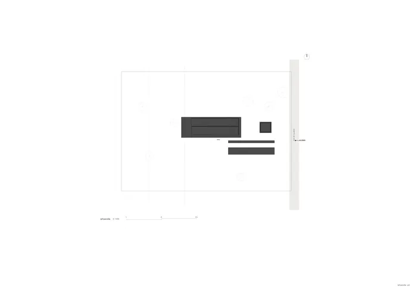
U01 · Situación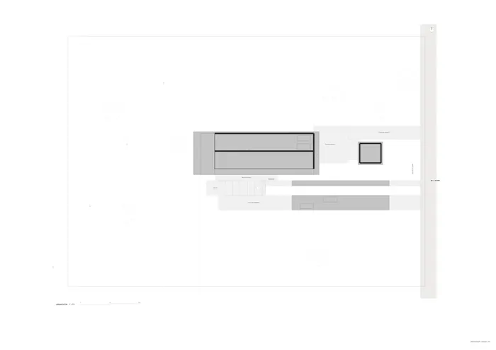
U02 · Urbanización y paisaje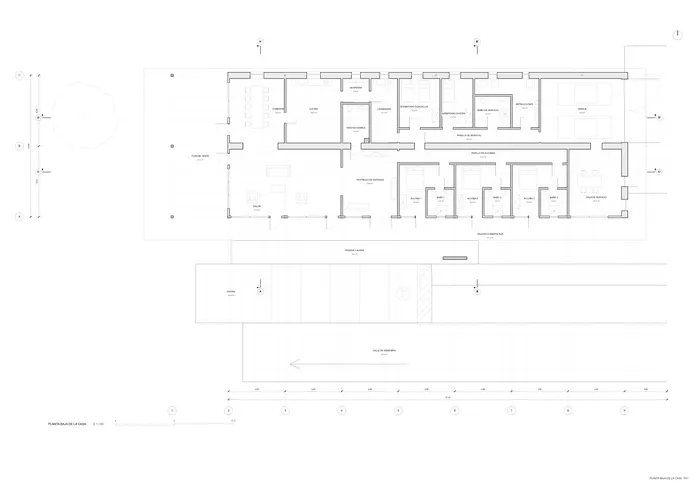
P01 · Planta baja de la casa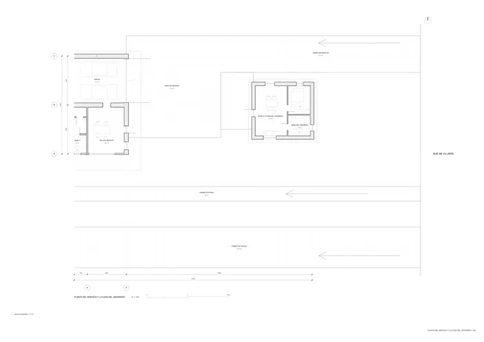
P02 · Planta del servicio y la casa del jardín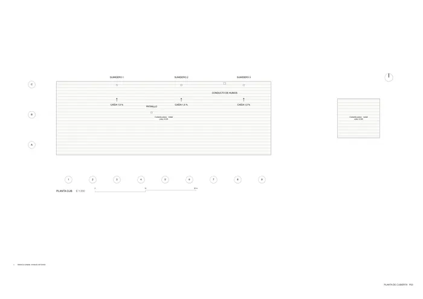
P03 · Planta de cubierta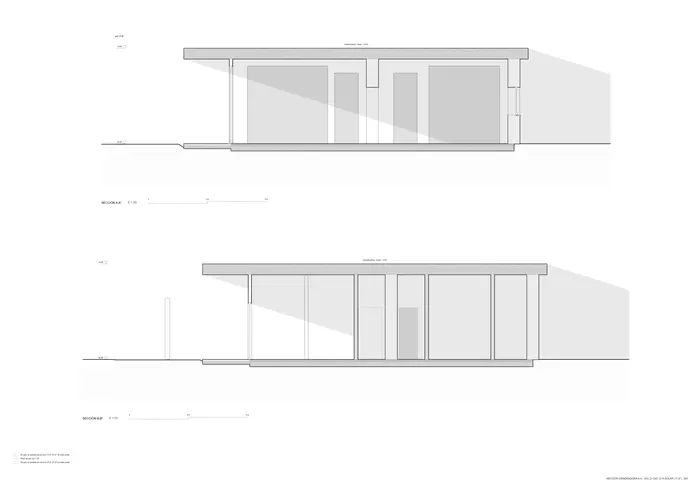
S01 · Sección generadora a a sol 21 dic 12 h s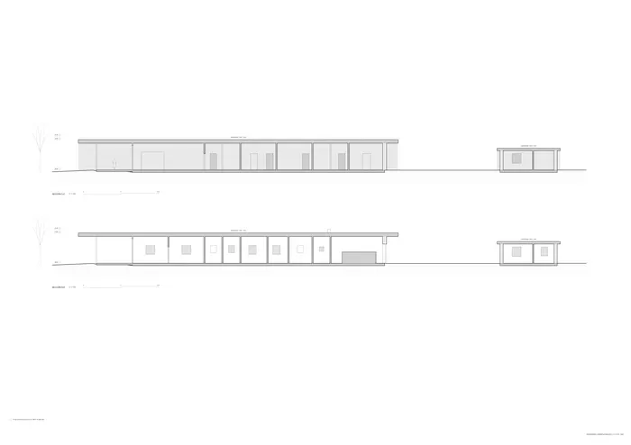
S02 · Secciones longitudinales C c y d d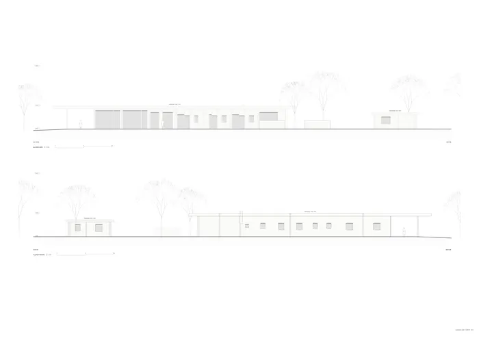
S03 · Alzados sur y norte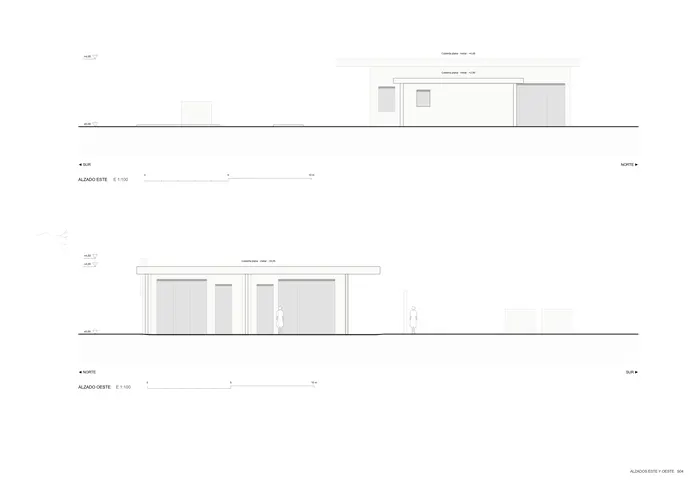
S04 · Alzados este y oeste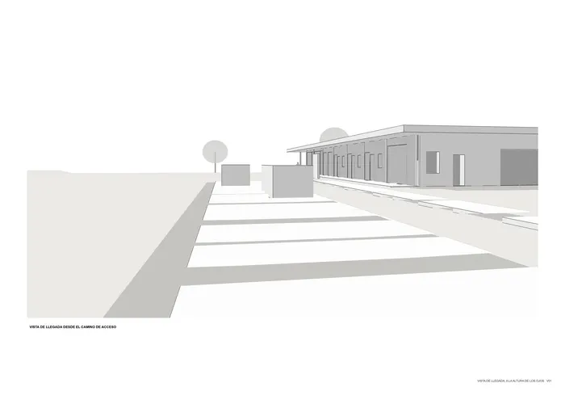
V01 · Vista de llegada a la altura de los ojos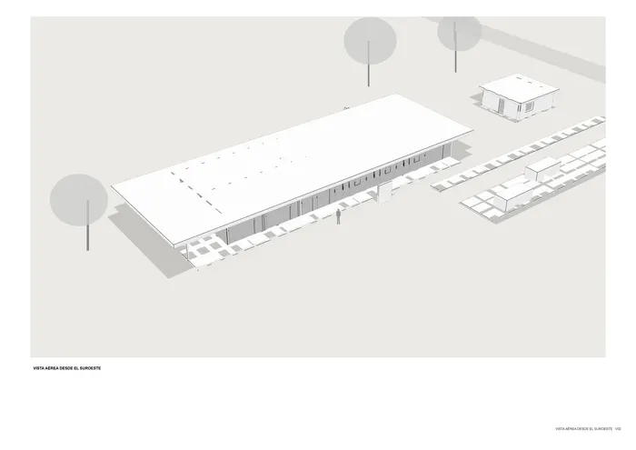
V02 · Vista aérea desde el suroeste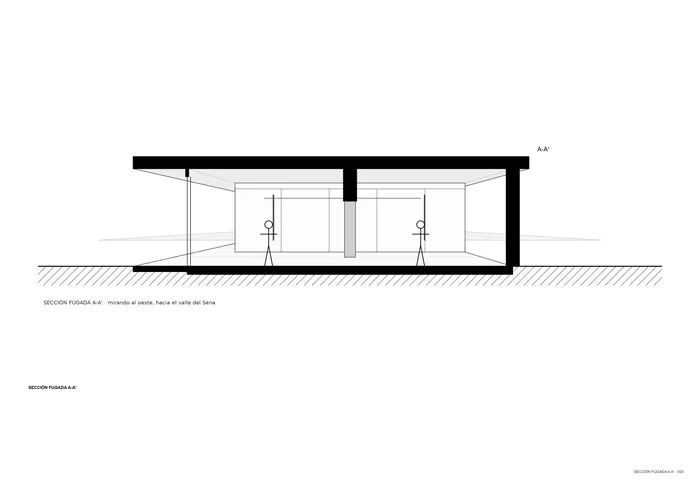
V03 · Sección fugada a a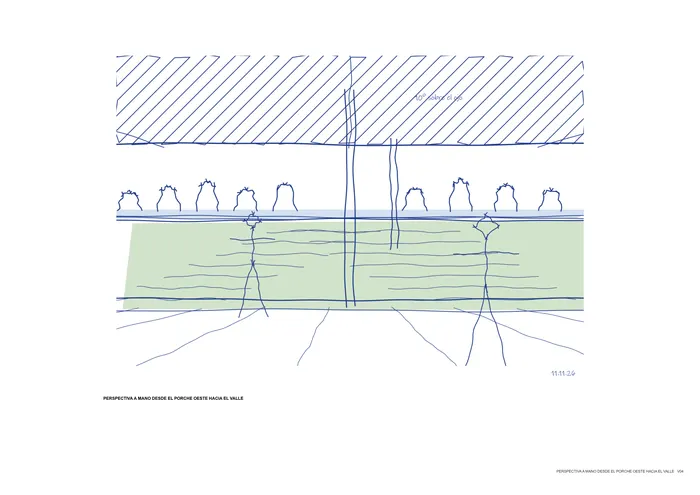
V04 · Perspectiva a mano desde el porche oeste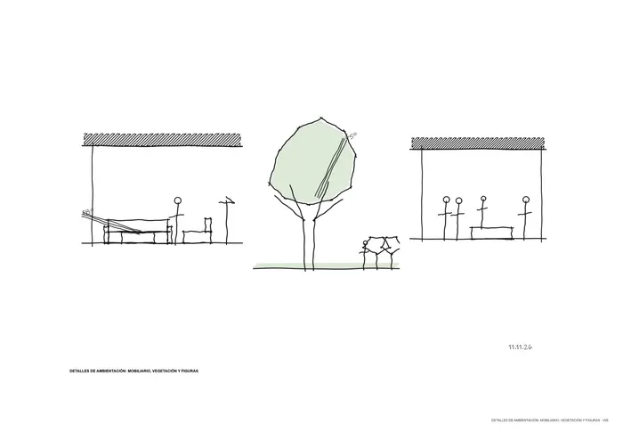
V05 · Detalles de ambientación mobiliario vege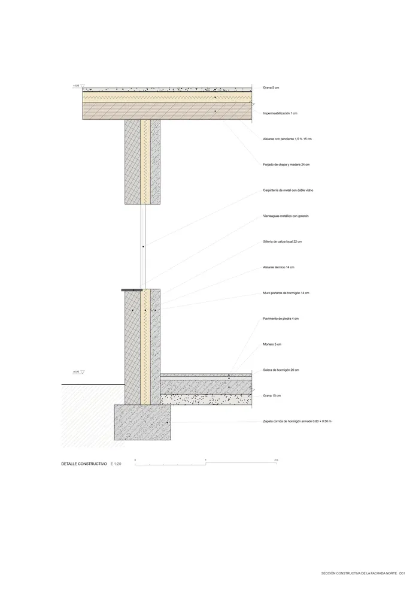
D01 · Sección constructiva de la fachada norte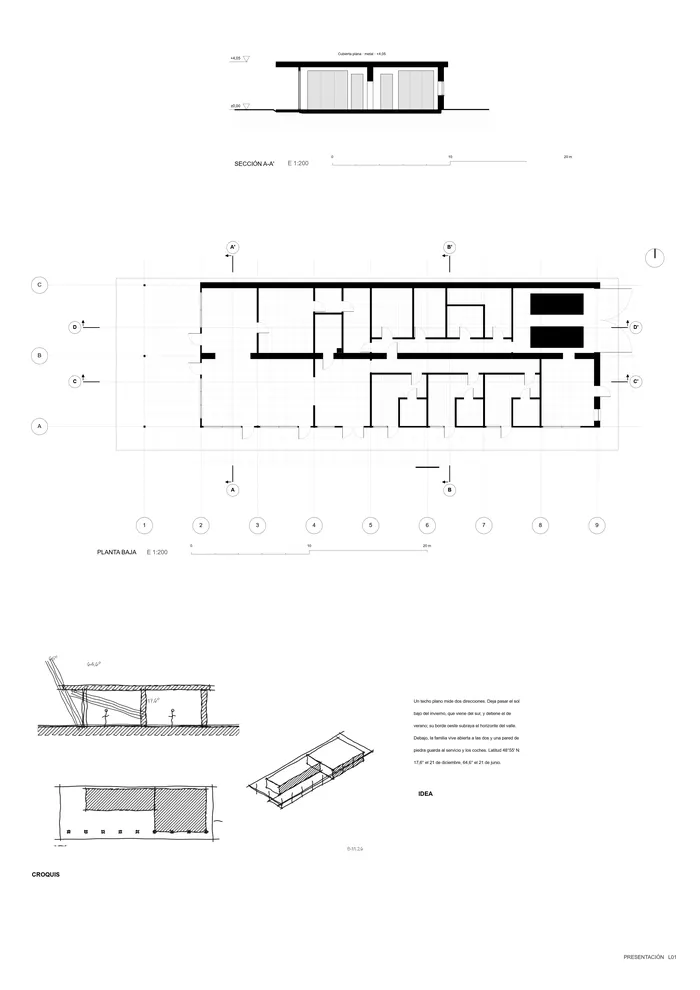
L01 presentaciónMemoria de la propuesta tal como la entregó el sistema. Se han omitido las notas internas del proceso (revisiones, control de reconocimiento y referencias a archivos de trabajo).